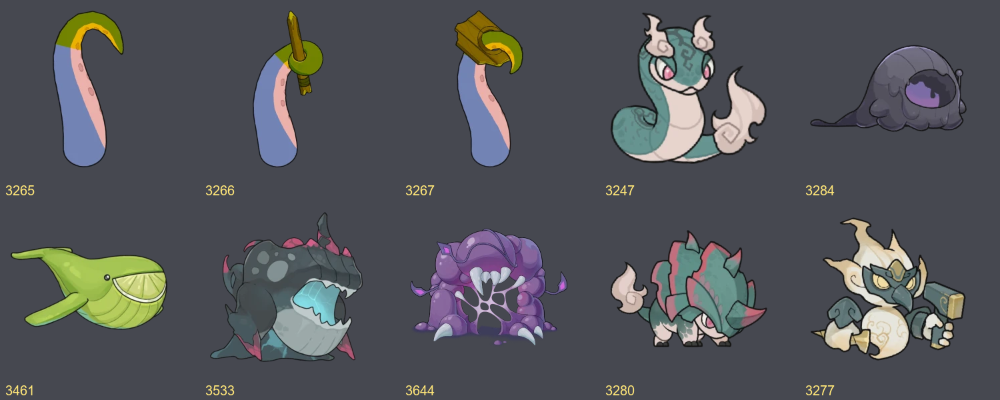

Sa Trùng dạng 1 (sâu non): chọn rig trong kho Sword x Staff

- 3265: ống thân như con giun ló khỏi mặt đất, đầu cong móc câu (13 xương, 5 slot). Có clip trồi lên
generate_01 và 3 chiêu. Chưa có mặt: phải thêm mặt (mảnh cứng trên xương đầu).
- 3247: rắn con cuộn tròn, có mặt, mắt to (41 xương, 22 slot, idle 4 s, 1 chiêu).
- 3284: con sên bò sát đất (67 xương, 35 slot, 2 chiêu).
- 3643 thu nhỏ: dùng chính rig dạng 2, đổi tỉ lệ (đầu to, ít phiến) và vẽ da non.
- (3266, 3267 là 3265 cầm đồ; 3461, 3533, 3644, 3280, 3277 để tham khảo, không hợp.)